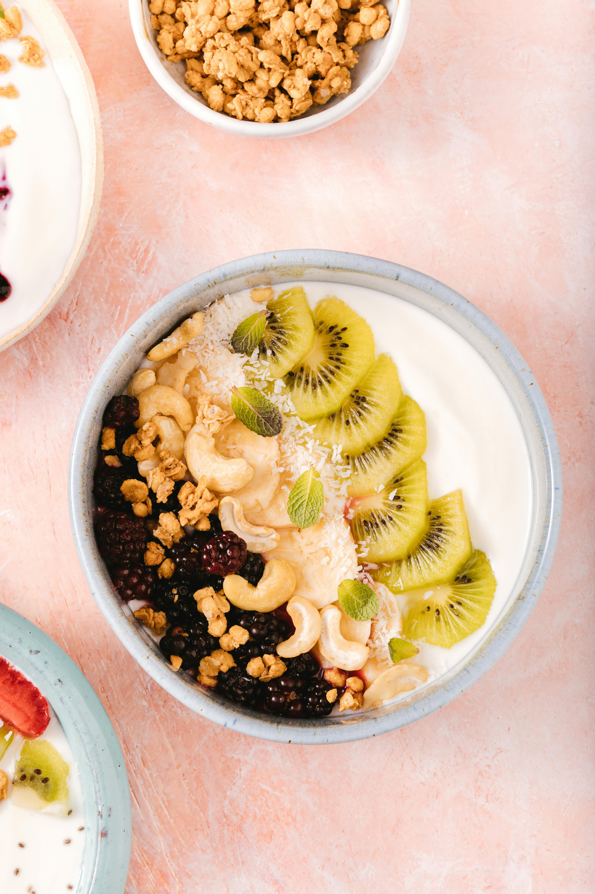

Yogurt Bowl Recipe

Photo by Antoni Shkraba Studio from Pexels: https://www.pexels.com/photo/sliced-kiwi-and-cashew-nuts-in-ceramic-bowl-6823331/
A yummy looking yogurt bowl. Credits
This sweet treat is bound to brighten up your day. That soft creamy texture is really to put you in a mood.
Ingredients:
- 150 g of Vanilla Greek Yogurt
- 50g of Protein Granola
- 1 Medium Banana, sliced
- 20g Mixed Berries
- 1 scoop of protein powder of your choice (Optional)
Steps:
- Place your greek yogurt in a bowl
- (If you don't have protein powder, you can skip to step 3) Mix your protein scoop into the yogurt and mix!
- Toss in your protein Granola
- Top off with sliced bananas, and mixed berries
- Enjoy!
Home Page